숲속 작은 온천장에
동물 손님이 찾아와요
A little forest hot spring,
full of animal guests
森の小さな温泉に
どうぶつのお客さん
너구리 동글이와 친구들이 토끼, 고양이, 카피바라 같은 동물 손님을 기다리고 있어요. 수건을 개고, 우유를 채우고, 따끈한 차를 우려 손님을 모셔 보세요. 재촉하는 타이머도, 갑자기 뜨는 광고도 없어요. 내 속도로 천천히 즐기면 돼요. Roly the raccoon dog and friends are waiting for guests: rabbits, cats, capybaras and more. Fold towels, stock milk and brew warm tea to make every guest feel at home. No rushing timers and no pop-up ads. Play at your own pace. タヌキのころんと仲間たちが、ウサギやネコ、カピバラなど動物のお客さんを待っています。タオルをたたんで、牛乳を並べて、あたたかいお茶をいれておもてなし。急かすタイマーも、突然出てくる広告もありません。自分のペースでのんびり遊べます。


무료 · 보상형 광고(선택) · 앱 내 구매(선택) · 6개 언어 Free · Optional rewarded ads · Optional in-app purchase · 6 languages 無料・リワード広告（任意）・アプリ内課金（任意）・6言語
방마다 손님이 좋아하는 것이 달라요Every room has its own favorite部屋ごとに好きなものがちがいます
수건, 우유, 차, 구운 달걀, 식혜…. 손님을 모실수록 동전이 쌓이고, 노천탕부터 별보기 다락까지 하나씩 열어 갑니다. 만드는 속도와 자리 수를 올리고, 방을 단장해 값을 올려요.Towels, milk, tea, baked eggs, rice punch and more. Every guest brings coins, and you open rooms one by one, from the Open Bath to the Stargazing Attic. Upgrade speed and seats, and renovate rooms to raise prices.タオル、牛乳、お茶、温泉たまご、甘酒…。おもてなしするほどコインがたまり、露天風呂から星見の屋根裏まで、ひとつずつオープン。作る速さや席数を強化し、部屋をリフォームして値段もアップ。
온천장, 시설, 축제, 직원, 도감, 이야기, 낚시Spa, rooms, festivals, staff, guest book, stories and fishing温泉、施設、まつり、スタッフ、図鑑、お話、釣り
옆으로 넘겨 실제 화면을 보세요.Swipe through the actual screens.横にスクロールして実際の画面をご覧ください。
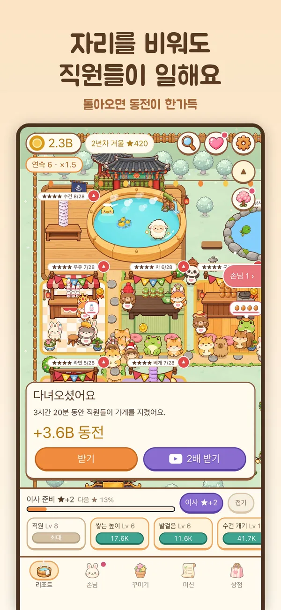
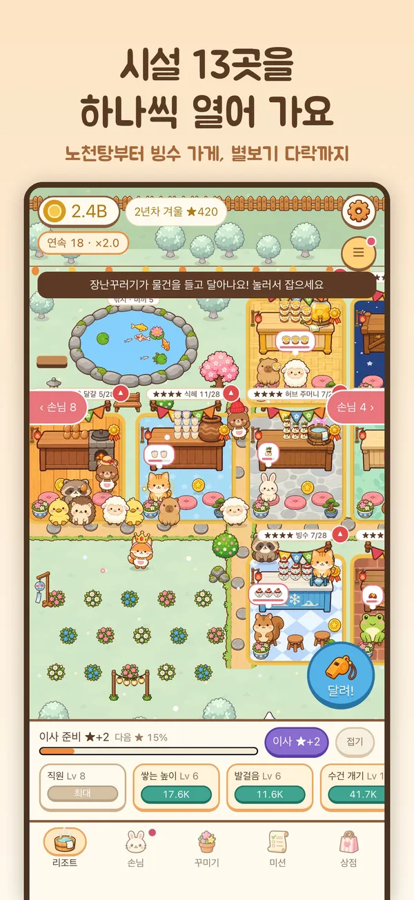
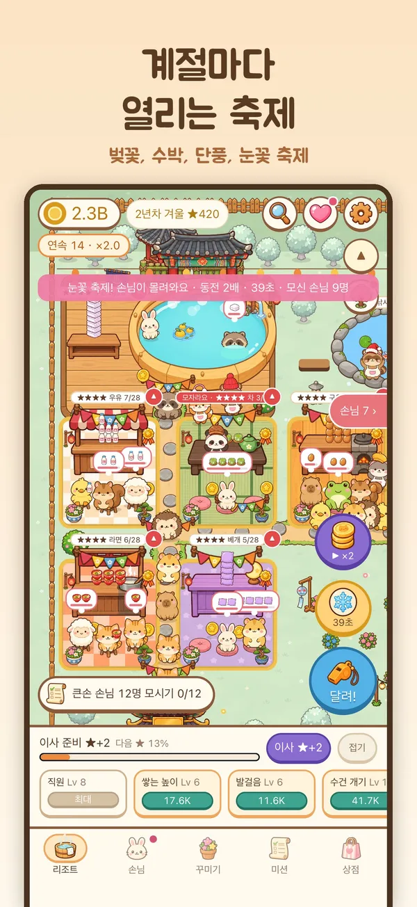
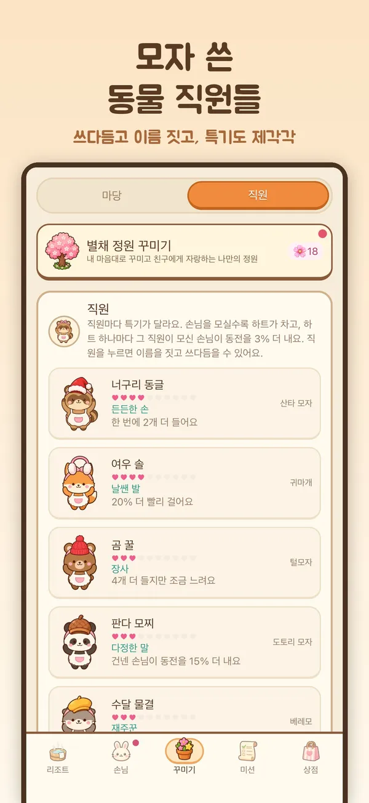
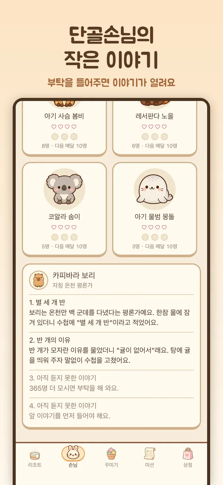
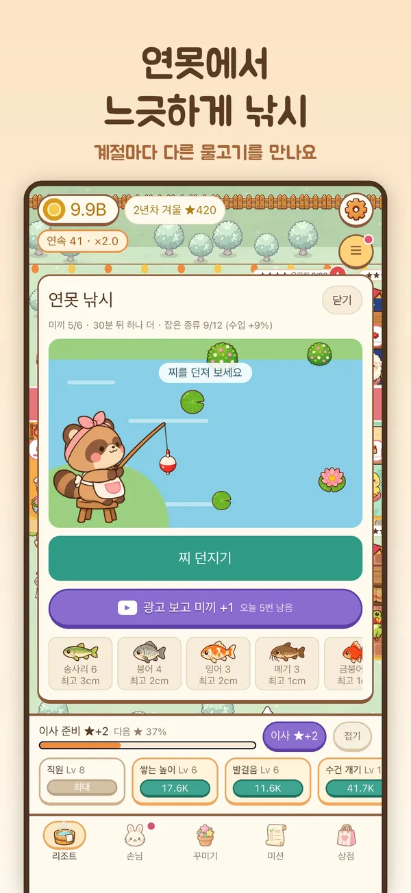
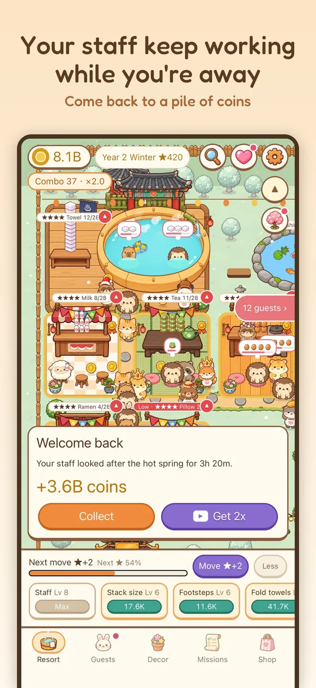
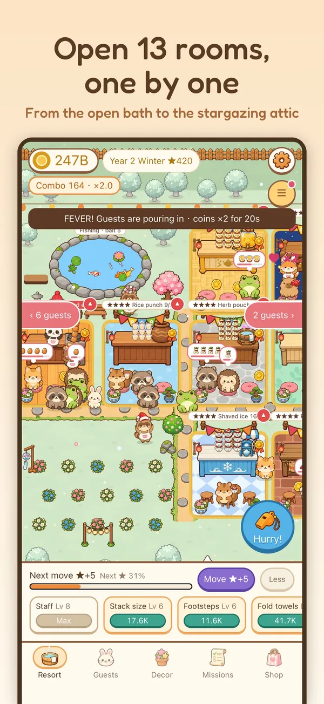
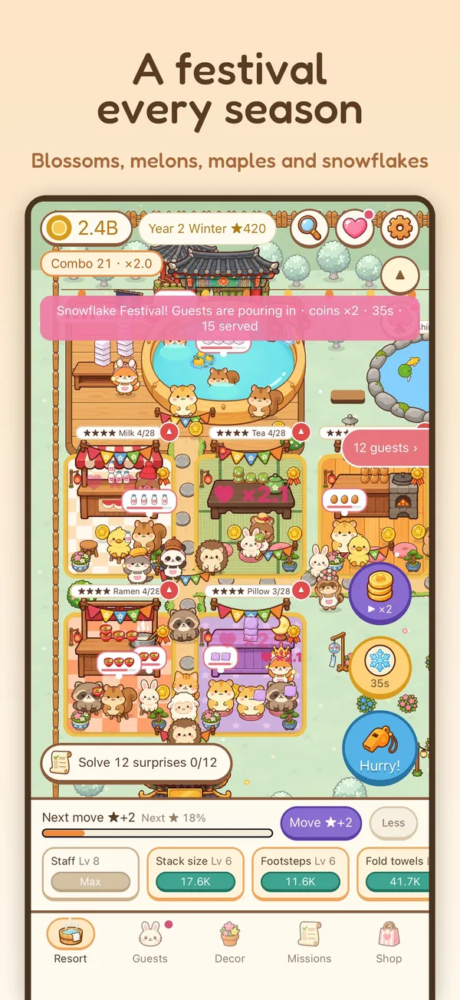
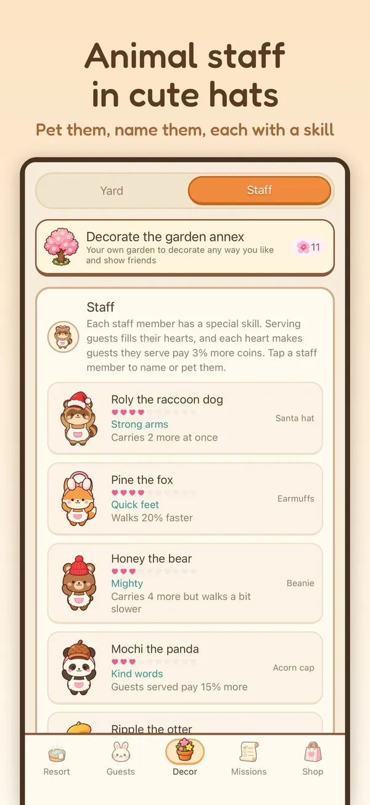
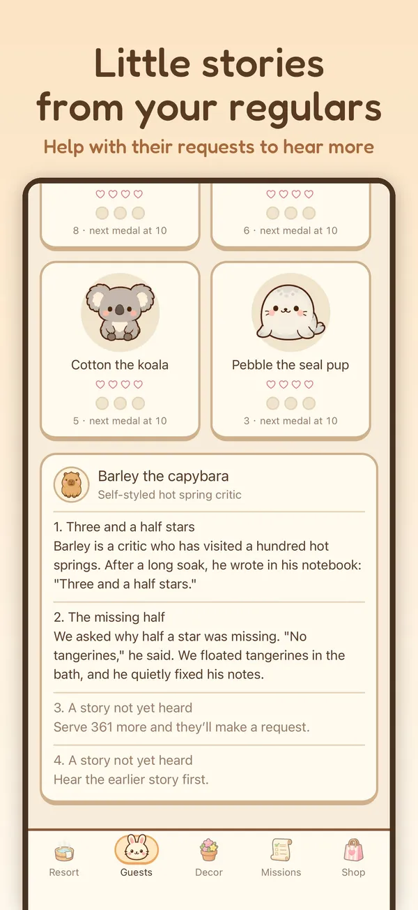
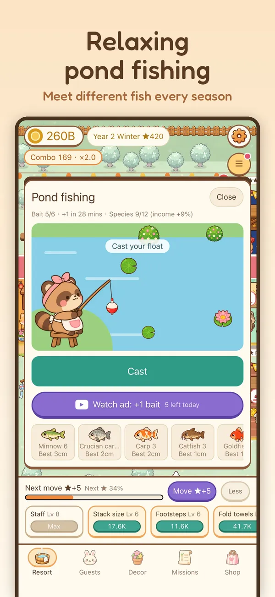
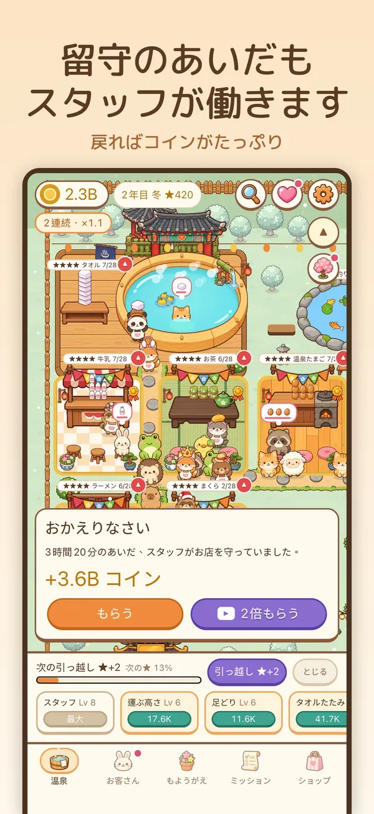
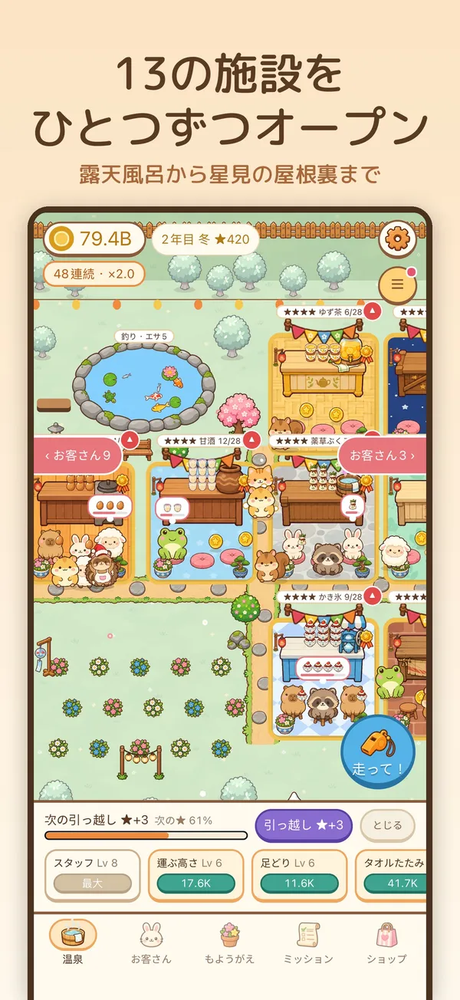
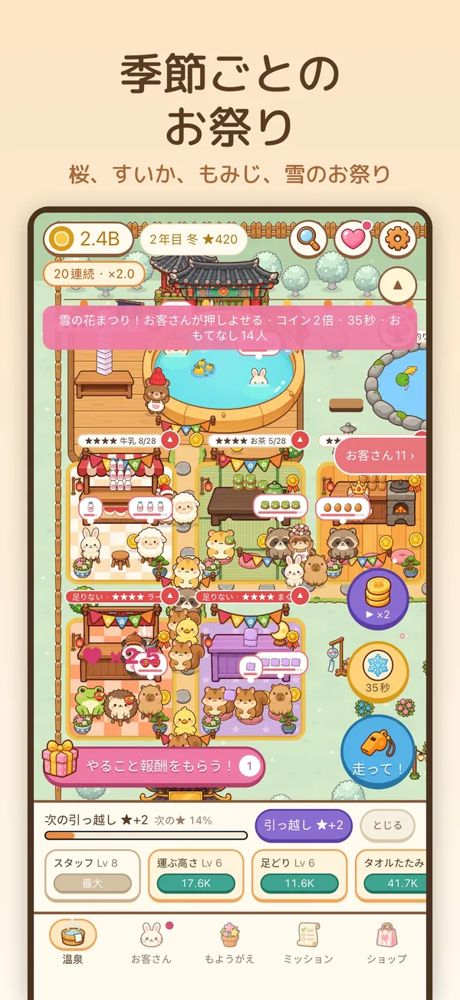
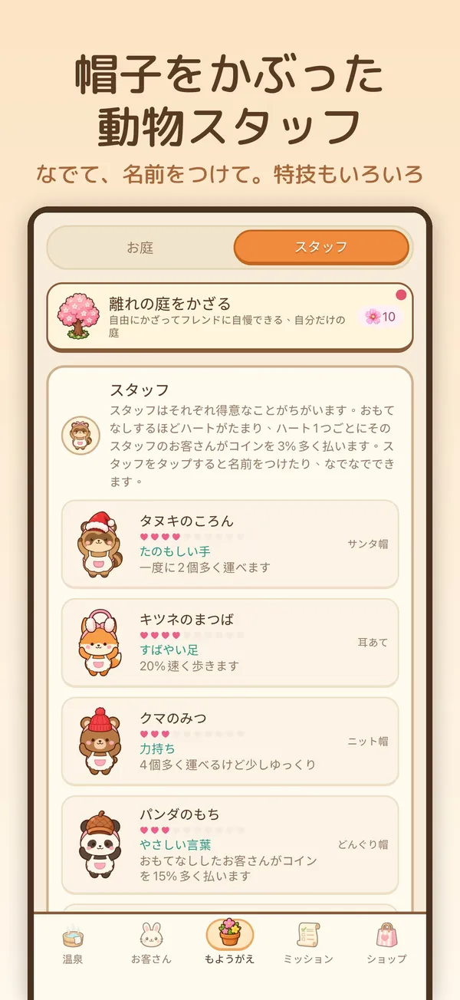
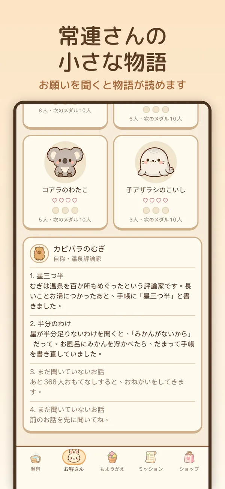
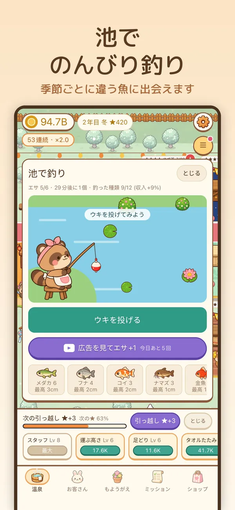
계절마다 축제가 열려요A festival every season季節ごとにおまつり
축제를 열면 손님이 두 배로 몰려와요. 계절이 끝나면 다음 계절로 '이사'하며 별빛을 받고, 해를 거듭하며 새내기 온천에서 숲속 궁궐 온천까지 등급을 올립니다.Open a festival and guests pour in at double the pace. When a season ends, move on to the next one and earn starlight, and year by year raise your grade from Fledgling Spa to Forest Palace Spa.おまつりを開くとお客さんが2倍。季節が終わったら次の季節へお引っ越しして星あかりをもらい、年を重ねて「はじめての湯」から「森の御殿湯」までランクを上げます。
벚꽃 아래 첫 손님을 맞아요.Welcome your first guests under the cherry blossoms.桜の下で最初のお客さんを迎えます。
시원한 수박과 빙수가 기다려요.Cool watermelon and shaved ice await.冷たいスイカとかき氷が待っています。
붉게 물든 숲에서 온천 한 번.A warm soak in the red autumn forest.色づいた森でひと風呂。
눈 내리는 노천탕이 가장 포근해요.The open bath is coziest when it snows.雪の露天風呂がいちばんぽかぽか。
천천히, 포근하게 키우는 나만의 온천장Grow your hot spring, slowly and cozilyゆっくり、ぽかぽか育てる温泉
일 잘하는 동물 직원Hard-working animal staffはたらきものの動物スタッフ
너구리, 여우, 곰, 판다, 수달 직원마다 힘·속도·말솜씨 같은 특기가 있어요. 쓰다듬어 하트를 모으고, 모자도 씌워 줄 수 있어요.Raccoon dog, fox, bear, panda and otter, each with a skill like strength, speed or kind words. Pet them to collect hearts and dress them up in hats.タヌキ、キツネ、クマ、パンダ、カワウソ。それぞれに力持ち・早足・やさしい言葉などの特技があります。なでてハートを集め、ぼうしもかぶせられます。
단골손님과 이야기Regulars and their stories常連さんとお話
16마리 단골손님이 찾아와 저마다의 이야기를 조금씩 들려줘요. 손님 도감을 채우고, 손님의 부탁도 들어줘 보세요.16 regular guests visit and share their stories a little at a time. Fill your guest book and help them with their requests.16匹の常連さんが、それぞれのお話を少しずつ聞かせてくれます。図鑑をうめて、おねがいもかなえてあげましょう。
연못과 낚시The pond and fishing池と釣り
마당 연못에서 계절마다 다른 물고기 12종을 낚아요. 연못을 가꾸면 비단잉어와 거북이 찾아오고 모든 수입이 늘어요.Fish for 12 kinds of fish that change with the seasons. Tend the pond and koi and a turtle move in, raising all your income.お庭の池で、季節ごとにちがう12種の魚を釣りましょう。池を育てると錦鯉やカメがやってきて、すべての収入もアップ。
자리를 비워도 괜찮아요Fine to step away留守にしても大丈夫
잠깐 자리를 비워도 직원들이 일해 둔 동전이 기다리고 있어요. 재촉하는 타이머는 없어요.Step away for a while and the coins your staff earned will be waiting. No timers rushing you.少し目を離しているあいだも、スタッフがかせいだコインが待っています。急かすタイマーはありません。
마당 꾸미기Decorate the yardお庭のもようがえ
벤치, 석등, 벚나무, 풍경, 눈사람 같은 소품으로 마당을 꾸미고, 축제를 열면 노점이 생겨요.Decorate with benches, stone lanterns, cherry trees, wind chimes and snowmen, and festival stalls appear as you hold festivals.ベンチ、石灯籠、桜の木、風鈴、雪だるまでお庭を飾り、おまつりを開くと屋台も登場します。
친구와 함께With friendsフレンドと一緒に
로그인하면 친구 코드로 서로의 온천장을 구경하고, 하루 한 번 하트를 보내요. 채팅이나 자유 입력은 없어요.Sign in to swap friend codes, visit each other's hot springs and send a heart once a day. There is no chat or free-text input.ログインするとフレンドコードでおたがいの温泉を見に行き、1日1回ハートを送れます。チャットや自由入力はありません。
자주 묻는 질문Questionsよくある質問
무료인가요? 광고가 많나요?Is it free? Are there many ads?無料ですか？広告は多いですか？
무료입니다. 광고는 원할 때 버튼을 눌러 보는 보상형 광고뿐이고, 배너나 갑자기 뜨는 전면 광고는 없습니다. 선택 상품인 포근 패스(7·30·90일)를 사면 기간 동안 광고 없이 보상을 받고, 자리 비운 보상 +4시간, 무료 선물 2배, 미끼 +2 혜택이 붙습니다. 자동으로 갱신되지 않습니다.Yes. The only ads are optional rewarded ads you choose to watch — no banners and no pop-up ads. The optional Cozy Pass (7, 30 or 90 days) gives ad rewards without ads, +4 hours of away earnings, double free gifts and +2 bait for its period. It does not renew automatically.はい、無料です。広告はボタンを押して見たいときだけ見るリワード広告のみで、バナーや突然出てくる全画面広告はありません。任意のぽかぽかパス（7日・30日・90日）を買うと、期間中は広告なしでごほうび、お留守番のごほうび+4時間、無料プレゼント2倍、エサ+2。自動更新はされません。
계정이 필요한가요?Do I need an account?アカウントは必要ですか？
아니요. 로그인 없이 바로 플레이하고, 진행 상황은 기기에 저장됩니다. Apple 또는 구글로 로그인하면 클라우드에 저장돼 폰을 바꿔도 이어서 할 수 있고, 친구 기능도 쓸 수 있습니다. 설정에서 계정을 삭제할 수 있습니다.No. Play right away without signing in; progress is saved on your device. Sign in with Apple or Google to back it up to the cloud, keep playing on a new phone and use friends. You can delete the account in Settings.いいえ。ログインなしですぐに遊べ、進み具合は端末に保存されます。Apple または Google でログインするとクラウドに保存され、機種変更しても続きから遊べ、フレンド機能も使えます。アカウントは設定から削除できます。
어떤 언어를 지원하나요?Which languages does it support?対応言語は？
한국어, 영어, 일본어, 스페인어, 중국어(번체·간체) 6개 언어를 지원합니다.Six: English, Korean, Japanese, Spanish, and Traditional and Simplified Chinese.日本語、英語、韓国語、スペイン語、中国語（繁体字・簡体字）の6言語に対応しています。
안드로이드에서도 쓸 수 있나요?Is it on Android?Androidでも使えますか？
현재는 App Store에서만 받을 수 있습니다. 아이폰용으로 만들었습니다.Not yet. It's on the App Store, made for iPhone.現在は App Store でのみ配信しています。iPhone 向けに作りました。
오늘도 수고한 나에게, 따뜻한 온천 한 번You worked hard today. How about a warm soak?今日もがんばったあなたに、あたたかい温泉を
무료로 설치하고 1년차 봄부터 시작하세요.Free to install. Start in Year 1 Spring.無料でインストールして、1年目の春から始めましょう。